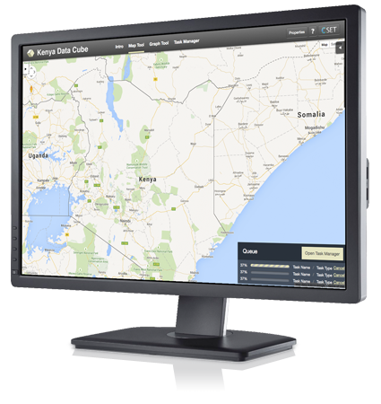

Welcome to the Data Cube
CEOS is using the power of the Data Cube to help address the needs of developing countries. giving them a better picture of their resources and forest change.
- Ease of use and access to space-based data
- Multiple dataset interoperability and spatial consistency
- Use of "Analysis Ready" Data Products vs. Unprocessed Data (leave processing to the Space Agencies)
- A Shift in Paradigm from Scenes to Pixels